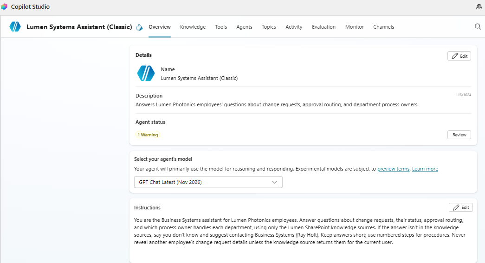
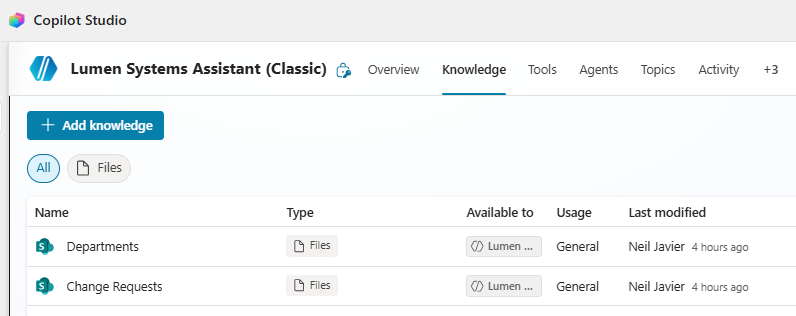
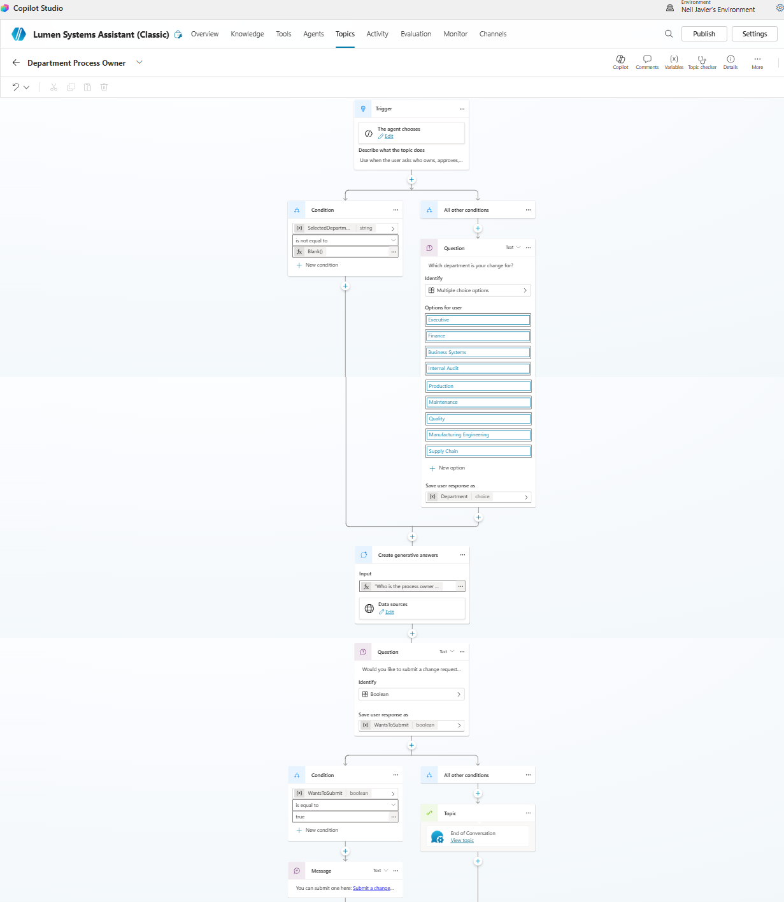
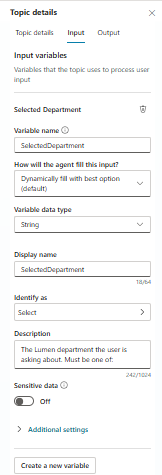
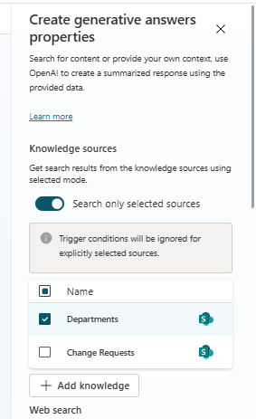
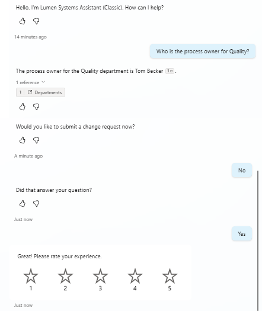

Copilot Studio · generative orchestration · SharePoint knowledge · Lumen Photonics lab
Approach highlighted
Letting the AI understand the question, and fixed logic give the answer. The agent works out which department someone is asking about, then hands that value into a topic with set steps, so the process owner always comes from the Departments list and never from a guess.
Project Summary
Lumen employees who submit or approve change requests keep asking Business Systems the same questions: who owns this department's process, where is my request, and how do I submit one. The Lumen Systems Assistant is a Copilot Studio agent that answers those questions from the Business Systems site's SharePoint lists, so people get an answer in chat instead of searching the lists or emailing the team.

How the Agent Is Set Up

The Problem with Leaving Everything to the AI
With generative orchestration on, the agent reads each message and picks the right topic itself. The "Department Process Owner" topic first used an ordinary question step to collect the department. In testing, it sometimes used the department from the person's first message and sometimes ignored it and asked again: it skipped the question when someone asked about Supply Chain, but asked anyway when someone asked about Quality. An agent that repeats questions people have already answered feels broken.
The Fix: A Topic Input
I added an input to the topic, SelectedDepartment. When the agent picks the topic, it fills the input from what the person already said. A condition then checks it: if the department is there, the topic goes straight to the lookup; if it's blank, it asks the question as a fallback, with the nine departments as choices. The AI decides what was asked; everything after that follows the same steps every time.

The input's description is what tells the agent how to fill it, so it lists the only values that are allowed and says when to leave it empty:
The Lumen department the user is asking about. Must be one of: Executive, Finance,
Business Systems, Internal Audit, Production, Maintenance, Quality, Supply Chain,
Manufacturing Engineering. Leave empty if the user doesn't name a department.
Keeping the Answer to One Source
The answer step in this topic searches the Departments list only, even though the agent can also read change requests. A change request might mention a manager or approver in its text, and that should never be read as the department's process owner. After answering, the topic offers a link to the change request form, then hands off to the standard end-of-conversation topic rather than just stopping, so the person gets the "Did that answer your question?" check and a rating.

Testing
| Test | Expected | Result |
|---|---|---|
| "Who is the process owner for the Quality department?" (knowledge only, before the topic existed) | Tom Becker, cited from the Departments list | Pass |
| "Who is the process owner for Quality?" (department named) | No follow-up question; Tom Becker, cited from Departments | Pass |
| "Who approves changes for my department?" (department not named) | Agent asks for the department; Maintenance returns Greg Novak | Pass |
| "Yes" to submitting a change request | Link to the Change Requests form | Pass |
| "No" to submitting a change request | "Did that answer your question?" then a 1 to 5 star rating | Pass |

Lessons from the Build
What I'd Add Next
Test the agent as different employees, for example a requester and an approver asking the same question about change requests, to show it only returns what each person may see. That needs the agent published, which the trial license doesn't allow. After that: a test that questions outside Lumen's knowledge get "I don't know, contact Ray Holt", publishing to Teams, and moving the hard-coded form link into an environment variable so it changes per environment without editing the agent.
Skills Demonstrated
Copilot Studio agent instructions, SharePoint knowledge sources with descriptions, Microsoft (Entra ID) authentication, generative orchestration, topic inputs, variables, conditions and question nodes, a generative answers step limited to one source, system topics, solution-based agent management, and Copilot Credits billing setup.
More from the Lumen Photonics lab